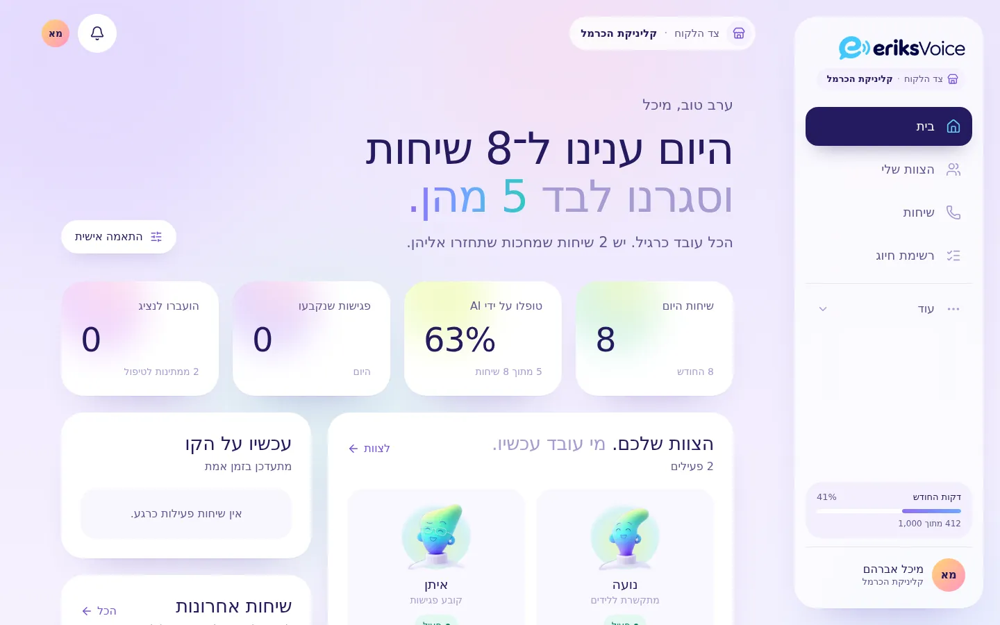
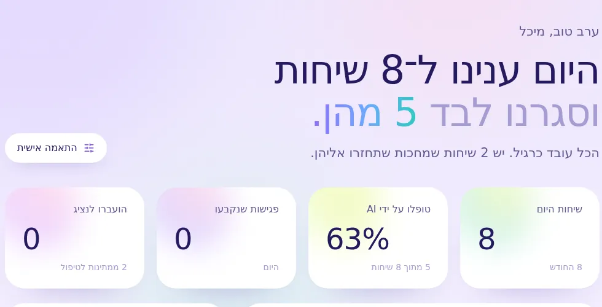
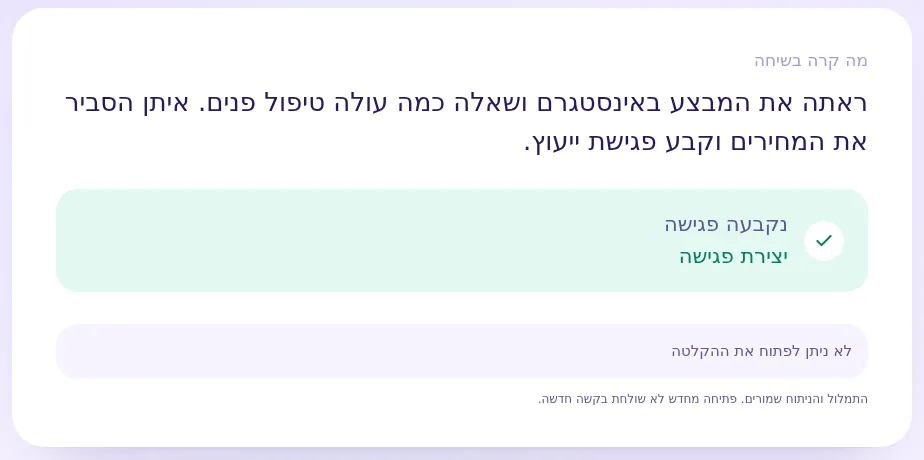
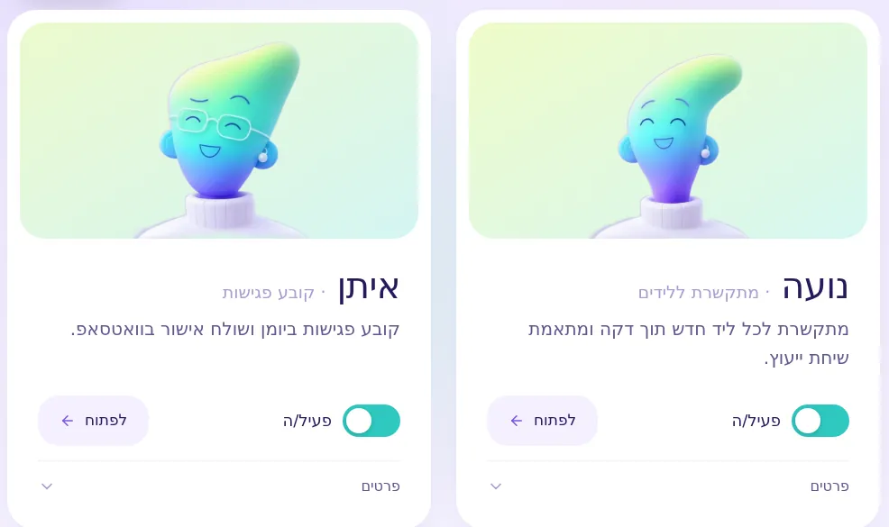
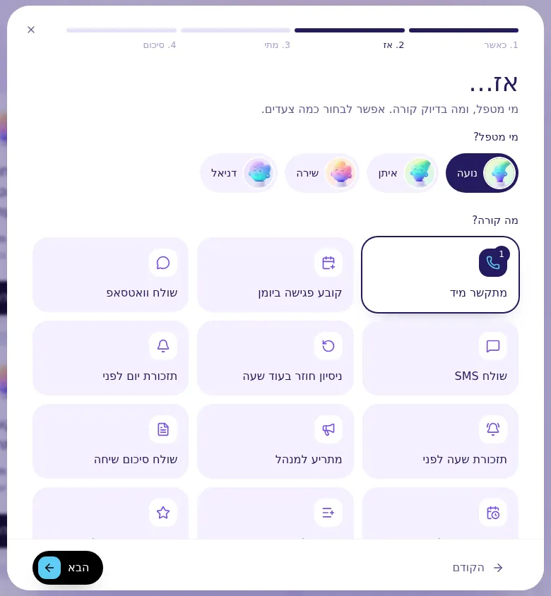
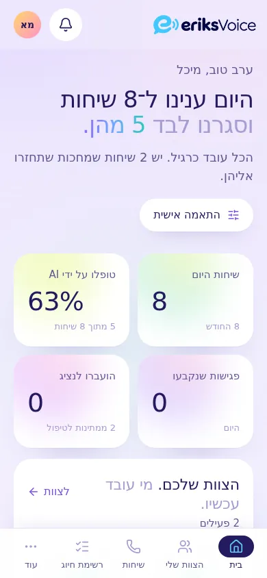

Eriks Voice
עיצבתי מחדש את המסכים, כדי שבעל העסק יראה במבט אחד מה קרה היום.

01המטרה
שבעל עסק ייכנס בבוקר ויבין מיד מה קרה בטלפון: כמה שיחות היו, מה נקבע, ולמי צריך לחזור.
את המנגנון לא נגעתי. השינוי הוא במה שרואים, ובסדר.
02האפיון
- למי זה
- בעלי עסקים שהמערכת עונה להם לטלפון, ואנשי הסוכנות שמנהלים אותה.
- מה היה צריך לפתור
- להפוך מסכים מלאים בנתונים לתשובה פשוטה: מה קרה, ומה עושים עכשיו.
- מה אסור היה לשבור
- רק העיצוב. המנגנון, הנתונים והחיבורים נשארו כמו שהיו.
03ההחלטות
ההחלטות שעשו את ההבדל.
- 01
משפט אחד בראש המסך.
במקום טבלה: כמה שיחות היו היום, וכמה מהן נסגרו בלי עזרה.
- 02
לכל נציג, דמות ושם.
קל לזכור מי עונה לטלפון, מי מתקשר ללקוחות חדשים ומי קובע פגישות.
- 03
ברור באיזה מצב אתם.
פס כהה בניהול, ומסך בהיר כשרואים מה שהלקוח רואה.
- 04
תהליך שקורה לבד, צעד אחרי צעד.
בונים תהליך בארבעה צעדים קצרים, בלי מונחים טכניים.
04מה מיוחד כאן
פרטים שכדאי לראות מקרוב.

מה קרה היום, במבט אחד
משפט אחד גדול, ומתחתיו ארבעה מספרים.

שיחה, בשתי שורות
מה הלקוח רצה, ומה קרה אחרי השיחה.

הצוות שלכם
כל נציג עם דמות, שם, מה הוא עושה, ומתג להפעלה.

בונים תהליך בארבעה צעדים
בכל צעד בוחרים מתוך כרטיסים.
06בטלפון ובמחשב
אותה מערכת, בטלפון ובמחשב.
בטלפון, התפריט עובר לתחתית המסך.

רוצים שגם האתר שלכם יהיה ברור ככה?
מדברים ישירות איתי. מענה בוואטסאפ 24/7.